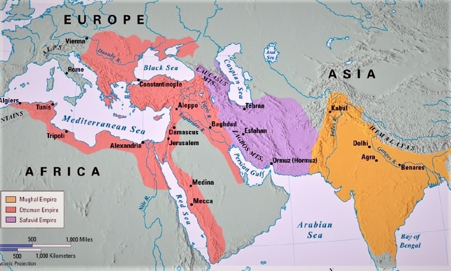
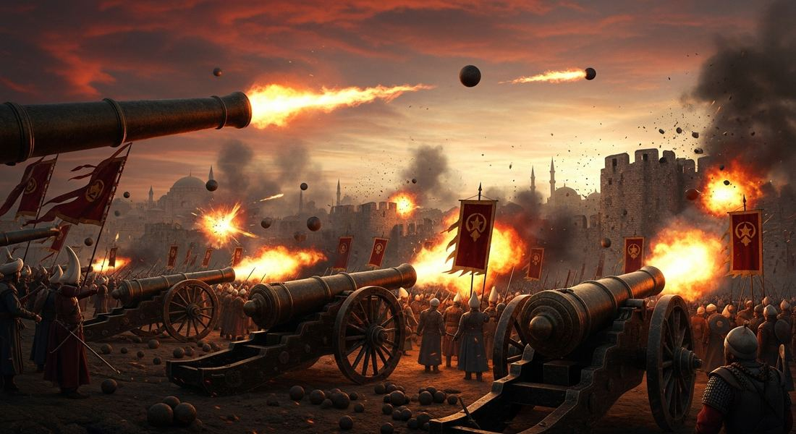
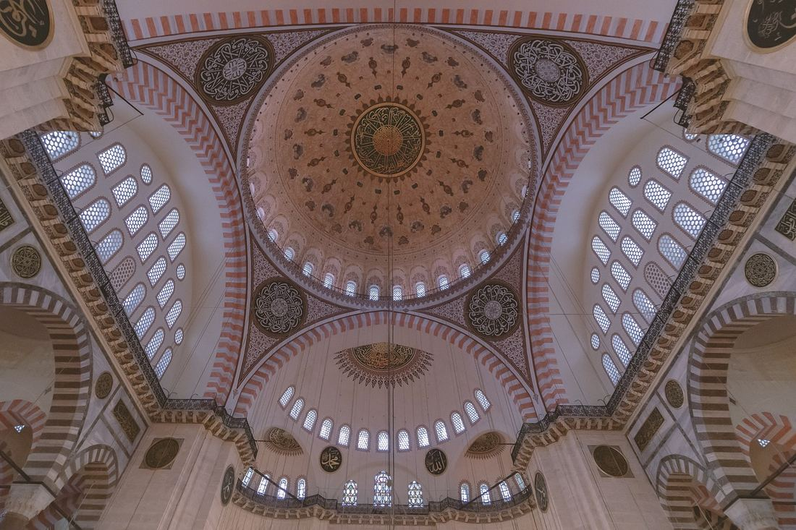
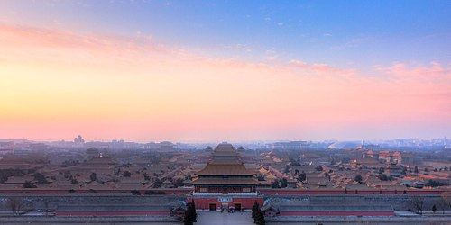

3.1 Empires Expand
- LO-A: Gunpowder changes everything: By 1450, gunpowder weapons, cannons and firearms, had matured into decisive military tools. Empires that mastered them could breach any fortress, defeat cavalry-based opponents, and project power over vast distances. This is why historians call the Ottoman, Safavid, Mughal, and Qing empires the "gunpowder empires." Ottoman Empire: The Ottoman Turks captured Constantinople in 1453 (ending the Byzantine Empire), then expanded to three continents. At its height, the empire stretched from Hungary to Yemen and from Morocco to Mesopotamia, the most powerful state in the 16th-century world, controlling the trade gateway between Europe and Asia.
- LO-B: Understand the role of gunpowder weapons in enabling…: Mughal Empire: Babur, a Central Asian warrior who claimed descent from Genghis Khan, invaded India in 1526 and founded the Mughal Empire. His grandson Akbar expanded and consolidated it, eventually controlling most of the Indian subcontinent, the world's most populous and commercially rich region. Safavid Empire: The Safavids established Twelver Shi'a Islam as the state religion of Persia, a decision that defined Persian identity, created lasting conflict with Sunni neighbors, and transformed the religious geography of the Islamic world.
- LO-C: Identify the four major land-based empires and their…: Qing (Manchu) Dynasty: The Manchu people of northeastern Asia conquered the Ming Dynasty of China in 1644, establishing the Qing Dynasty. They then expanded aggressively into Mongolia, Central Asia, Tibet, and Xinjiang, making the Qing the largest empire in Chinese history. State rivalries: Expansion inevitably produced conflict. The Ottoman-Safavid rivalry was driven by both religious (Sunni vs. Shi'a) and territorial competition. In West Africa, a Moroccan army armed with firearms crossed the Sahara and shattered the Songhai Empire in 1591, a dramatic demonstration of how gunpowder advantage could decide imperial fates.
Try each question before revealing the answer.
1. Why were gunpowder cannons such a decisive military advantage in the 15th–16th centuries, when they had existed in some form for centuries?
2. What made Constantinople the most strategically valuable city in the world in 1453, and why did the Ottomans make capturing it their priority?
3. The Mughal Empire was founded by a Muslim minority ruling over a vast Hindu majority. What practical challenges did this create, and how might a ruler address them?
4. The Safavid Empire declared Twelver Shi'a Islam as its state religion in a region where most Muslims were Sunni. What were the likely consequences of this decision?
5. The Manchu people who founded the Qing Dynasty were a small minority governing the world's largest population. What strategies could they use to maintain control without being absorbed by Chinese culture?
- Explain how and why various land-based empires developed and expanded from 1450 to 1750 Understand the role of gunpowder weapons in enabling imperial expansion
- Identify the four major land-based empires and their geographic extent
Tap a term for its definition.
-
Definition: A term used by historians to describe the Ottoman, Safavid, and Mughal empires (and sometimes the Qing), all of which used gunpowder weapons, particularly cannons and firearms, to build and maintain large empires in the 15th–18th centuries. Significance: Highlights the role of military technology in enabling imperial expansion; these empires mastered firearms when rival powers (cavalry-based nomads, fragmented kingdoms) had not yet done so.
-
Definition: The elite infantry soldiers of the Ottoman Empire, recruited through the devshirme system from Christian families in the Balkans, converted to Islam, and trained from childhood as professional soldiers. Significance: The Janissaries were among the first professional standing armies in the world; their military discipline and firearms expertise made the Ottoman army the most formidable fighting force of the 15th–16th centuries; the cannon corps that battered Constantinople in 1453 was organized by Janissary commanders.
-
Definition: The Ottoman system of conscripting young Christian boys from the Balkans, converting them to Islam, and training them for imperial service, either as soldiers (Janissaries) or as administrators. Significance: Produced a loyal class of officials with no independent power base, entirely dependent on the sultan for their status. Paradoxically, devshirme boys often rose to the empire's highest positions; it was a system of forced service but also of social mobility.
-
Definition: Zahir ud-Din Muhammad Babur (1483–1530), Central Asian prince descended from both Timur and Genghis Khan, who invaded India and founded the Mughal Empire with his victory at the First Battle of Panipat (1526). Significance: The founding figure of the Mughal Empire; his memoirs ( Baburnama ) are a remarkable literary and historical document; his use of cannons at Panipat against Ibrahim Lodi's larger force demonstrated decisive gunpowder advantage.
-
Definition: Jalal ud-Din Muhammad Akbar (r. 1556–1605), the third Mughal emperor, who expanded the empire across most of the Indian subcontinent and is celebrated for his policy of religious tolerance, administrative innovation, and cultural synthesis. Significance: Eliminated the jizya (tax on non-Muslims), married Hindu Rajput princesses, appointed Hindus to high office, and sponsored an eclectic court culture blending Islamic, Hindu, and Persian traditions; widely considered the greatest Mughal ruler and one of the most effective imperial administrators in world history.
-
Definition: A Persian Islamic empire (1501–1736) that established Twelver Shi'a Islam as its state religion and governed Persia (modern Iran) and surrounding regions. Significance: Transformed Persian religious identity; created the Sunni-Shi'a fault line in the Islamic world that persists today; its conflict with the Sunni Ottoman Empire shaped the political geography of the Middle East for centuries.
-
Definition: The founder of the Safavid Empire (r. 1501–1524), who declared Twelver Shi'a Islam the state religion and conquered most of Persia. Significance: His declaration of Shi'a Islam was a revolutionary political and religious act; he was defeated by the Ottoman sultan Selim I at the Battle of Chaldiran (1514), partly because his cavalry refused to use firearms as un-Islamic, demonstrating the military consequences of rejecting gunpowder technology.
-
Definition: The last imperial dynasty of China (1644–1912), founded by the Manchu people of northeastern Asia who conquered the Ming Dynasty. Significance: Under the Qing, China expanded to its greatest territorial extent, absorbing Mongolia, Tibet, Xinjiang, and Taiwan; the Qing developed sophisticated strategies for governing diverse ethnic populations while maintaining Manchu ethnic identity; their eventual decline in the 19th century under Western pressure is a central story of Unit 6.
The Gunpowder Revolution: Why Empires Could Now Be Bigger

The four major land-based empires at their approximate height c. 1600: Ottoman (red), Safavid (blue), Mughal (green), and Qing/Manchu (yellow). Together they governed the majority of the world's population. Image credit not specified.
Before 1450, the world's largest empires faced an insoluble problem: how do you hold together vast territories when the people you've conquered can simply retreat behind walls and wait you out? Siege warfare was the great equalizer, a small city with high walls could resist an enormous army for months or years. The Mongol Empire had solved this partly through sheer scale and terror, but even the Mongols struggled with fortified cities.
By the mid-15th century, gunpowder technology, developed in China and transmitted westward through the Islamic world, had matured into a solution. Cannons of sufficient size could breach stone walls in days rather than months. A city that previously could hold off an army indefinitely now had a lifespan measured in cannon shots. Combined with handheld firearms (muskets and arquebuses) that made infantry far more deadly than cavalry archers, gunpowder weapons fundamentally altered the mathematics of warfare.
The empires that mastered these technologies first and most effectively became the dominant powers of 1450–1750. Historians sometimes call the Ottoman, Safavid, Mughal, and Qing empires the "gunpowder empires", a label that captures how central military-technological mastery was to their rise. These four empires collectively governed the majority of the world's population and controlled most of the world's agricultural wealth, trade routes, and cultural production during this period.
The Ottoman Empire: Constantinople and Three Continents

Ottoman forces deploying massive bronze cannons during a siege. The largest Ottoman cannon at Constantinople in 1453 fired stone balls weighing over 500 kilograms, and the walls that had protected the city for 1,000 years fell within 7 weeks. Image credit not specified.
In the early 14th century, the Ottomans were one of many small Turkic principalities (beyliks) in Anatolia, a modest power fighting over the scraps of the crumbling Byzantine Empire. Within 150 years they had become the dominant empire on three continents. How?
The decisive moment came on May 29, 1453, when Sultan Mehmed II, "the Conqueror", completed the siege of Constantinople, capital of the Byzantine Empire. Mehmed's engineers had constructed a battery of enormous bronze cannons, including the legendary "Basilica", a cannon so large it required 60 oxen to move and fired balls weighing over 500 kg. The walls that had protected Constantinople for a thousand years fell within seven weeks. The last Byzantine emperor, Constantine XI, died fighting on the walls.
The strategic and symbolic consequences were enormous. Constantinople controlled the Bosphorus strait, the only water route between the Black Sea and the Mediterranean. It was the world's greatest trade hub, gateway between Europe and Asia. Its capture made the Ottomans the dominant power in the eastern Mediterranean and gave them the prestige of having conquered the heir of Rome. Mehmed moved the empire's capital there and began transforming the great cathedral of Hagia Sophia into a mosque, a powerful statement of imperial and religious authority.

Licensed stock photo, commercially available. The Hagia Sophia in Istanbul, built as a Byzantine Christian basilica in 537 CE, converted into a mosque by Mehmed II after his conquest of Constantinople in 1453, then a museum (1934–2020), and reconverted to a mosque in 2020. Its transformation in 1453 was an iconic symbol of Ottoman imperial and religious authority. Image credit not specified.
Over the next century, Ottoman expansion continued under a series of powerful sultans:
- Selim I (r. 1512–1520) conquered the Mamluk Sultanate of Egypt and Syria, adding the holy cities of Mecca and Medina to the empire and claiming the title of Caliph, protector of all Sunni Muslims.
- Suleiman I "the Magnificent" (r. 1520–1566) led the empire to its greatest extent, besieging Vienna (1529), conquering Hungary, dominating the Mediterranean, and creating a legal and administrative system that governed the empire's diversity with remarkable efficiency.
At its height, the Ottoman Empire stretched from Hungary and Poland in the north to Yemen in the south, from Morocco in the west to Mesopotamia in the east, a territory that encompassed the entire eastern Mediterranean world and governed Christians, Muslims, and Jews across dozens of ethnic groups. It was, by any measure, the most powerful state in the 16th-century world.
The Mughal Empire: Gunpowder Conquers India
India in the early 16th century was divided among dozens of warring sultanates, Hindu kingdoms, and regional powers. The subcontinent was fabulously wealthy, the world's leading producer of cotton textiles, spices, and fine goods, but politically fragmented. Babur, a Central Asian prince who had lost his homeland in Samarkand but refused to accept defeat, saw opportunity.
At the First Battle of Panipat in 1526, Babur's force of roughly 12,000 men faced Ibrahim Lodi's army of perhaps 100,000, plus war elephants. Babur's decisive advantages were artillery (cannons that terrified the elephants and broke Lodi's formations) and tactical flexibility. Ibrahim Lodi died on the battlefield. Within a year, Babur controlled Delhi and the Gangetic plain.
Babur's grandson Akbar the Great (r. 1556–1605) transformed this military conquest into a stable empire. Akbar's genius was administrative and political: he recognized that a Muslim minority (roughly 20% of the population) could not rule a Hindu majority (roughly 60%) through force alone. His solution was one of history's most deliberate experiments in multicultural governance:
- He eliminated the jizya (the tax on non-Muslims), removing a major source of Hindu resentment.
- He married Rajput Hindu princesses and incorporated their families into the empire's governing nobility, creating a class of Hindu-Muslim aristocrats loyal to the Mughal court.
- He appointed Hindus, Muslims, and members of other religious communities to administrative positions based on merit.
- He created the Din-i-Ilahi ("Divine Faith"), a syncretic spiritual movement blending elements of Islam, Hinduism, Zoroastrianism, and Christianity, which served as an imperial ideology above religious sectarianism.
The result was an empire of extraordinary cultural richness. Mughal court culture blended Persian, Central Asian, and Indian traditions in architecture, painting, music, and literature, producing works like the Akbarnama (illustrated biography of Akbar) that remain masterpieces of world art.
The Safavid Empire: Persia's Shi'a Kingdom
In 1501, a 14-year-old named Ismail conquered the city of Tabriz and declared himself Shah of Persia. More dramatically, he declared Twelver Shi'a Islam the state religion of his new empire, a decision that would define Persian identity for the next five centuries.
Most of Persia's population at the time was Sunni Muslim. Shah Ismail forced conversion. Sunni scholars were expelled, executed, or required to publicly recant. Shi'a scholars and clergy were imported from Lebanon and Bahrain to build the new religious establishment. Within a generation, Persia had been transformed into a Shi'a state, creating a distinct Persian-Shi'a identity separate from both the Sunni Arabs and the Sunni Turks of the Ottoman Empire.
The consequences were immediately violent. The Ottoman sultan Selim I, a committed Sunni who regarded Shi'a as heretics, launched a devastating invasion. At the Battle of Chaldiran (1514), Ottoman artillery and firearms obliterated the Safavid cavalry. The Safavids had refused to use firearms, reportedly considering them un-Islamic or unchivalrous. Shah Ismail barely escaped alive and never recovered psychologically from the defeat. He spent his remaining years in depression and alcoholism.
The Safavid Empire recovered under Shah Abbas I (r. 1587–1629), arguably the empire's greatest ruler. Abbas modernized his military (importing European gunsmithing expertise, creating a corps of slave soldiers trained in firearms), moved the capital to Isfahan (which he built into one of the most beautiful cities in the world), and conducted a brilliant series of campaigns that recovered lost territory from both the Ottomans and the Uzbeks. Isfahan's royal mosque, palaces, and bazaars, still standing today, are among the finest examples of Islamic architecture ever built.
The Qing (Manchu) Dynasty: China's Final Imperial Expansion
The Manchu people of northeastern Asia (Manchuria) were a relatively small, semi-nomadic group who organized themselves under Nurhaci in the early 17th century. The Ming Dynasty of China, which had governed for nearly three centuries, was collapsing under the weight of fiscal crisis, peasant rebellions, and natural disasters. In 1644, as a rebel army sacked Beijing, the last Ming emperor hanged himself in the imperial gardens. A Ming general, hoping to use the Manchu as allies to restore order, opened the Great Wall, and the Manchu marched in, never to leave.

The Forbidden City (Palace Museum), Beijing, built 1406–1420 by the Yongle Emperor of the Ming Dynasty. With 980 buildings, it served as the imperial palace for both Ming and Qing emperors until 1912. Public domain, Wikimedia Commons.
The Qing Dynasty that followed pursued a dual strategy: they maintained Chinese administrative institutions and Confucian governance (making them appear as legitimate successors to the Ming) while simultaneously preserving Manchu cultural distinctiveness through strict rules against Manchu-Han intermarriage, maintaining separate Manchu military units (the Eight Banners), and requiring Chinese men to wear the Manchu queue as a sign of submission.
The Qing expansion was the largest in Chinese history. Under the Kangxi and Qianlong emperors (reigning from 1661–1799), the Qing conquered Inner and Outer Mongolia, Tibet, and the vast steppe territories of Xinjiang, almost doubling China's territory. This expansion was achieved through a combination of military campaigns, strategic marriages, and religious diplomacy (the Qing cultivated relationships with Tibetan Buddhist lamas, using religious legitimacy to pacify Inner Asian populations without constant warfare).
State Rivalries: When Empires Collide
The existence of multiple powerful empires in close proximity inevitably produced conflict. Two rivalries deserve specific attention as AP illustrative examples:
The Safavid-Mughal conflict centered on the city of Kandahar in present-day Afghanistan, a strategically vital crossroads between the two empires that changed hands repeatedly through the 16th and 17th centuries. The rivalry had a religious dimension (both were Muslim, but the Safavids were Shi'a and the Mughals officially Sunni) and a dynastic dimension (both ruling families claimed descent from illustrious Central Asian lineages and competed for prestige). Neither empire permanently controlled Kandahar; the struggle illustrated that even powerful empires could not always translate military strength into durable territorial control.
The Songhai Empire and Morocco illustrates how gunpowder advantage could cross unlikely distances. The Songhai Empire of West Africa was one of the largest states in the world in the 16th century, controlling trans-Saharan trade routes and a vast agricultural hinterland. In 1591, the Saadian Dynasty of Morocco sent an army of approximately 4,000 soldiers, including a core of Spanish and Portuguese renegades armed with arquebuses, across 1,500 miles of Sahara desert to attack Songhai. The Battle of Tondibi was a catastrophic Songhai defeat. Songhai cavalry, however numerous, could not withstand firearms. The empire fragmented into regional powers that never reassembled. A single technological advantage had destroyed one of Africa's greatest states.
These videos will help you review Empires Expand and solidify key concepts before your exam.
- The decline of Islamic power in the Mediterranean basin following the fragmentation of the Abbasid Caliphate
- The spread of European military technology to Ottoman forces through commercial exchange on the Silk Roads
- The role of gunpowder weapons in enabling land-based empires to expand by overcoming previously impregnable fortifications
- The weakening of Byzantine power primarily caused by the economic consequences of the Black Death
- Akbar's personal conversion away from Islam toward a syncretic religious philosophy that rejected all established faiths
- The use of religious tolerance and cultural synthesis as methods of consolidating power over a religiously diverse empire
- The Mughal Empire's adoption of Hindu governance traditions as more appropriate than Islamic ones for ruling India
- European Enlightenment ideals of religious freedom diffusing into South Asia through the Portuguese colonial presence in Goa
- Religious considerations could influence military decisions with significant strategic consequences in the gunpowder age
- Ottoman military victories were primarily the result of larger armies rather than superior weapons technology
- Safavid religious orthodoxy was stronger than Ottoman religious institutions during the 16th century
- The Battle of Chaldiran permanently ended Safavid power and led to the empire's collapse within a generation
- Trans-Saharan trade networks had weakened to the point that African empires could no longer defend their trade routes
- The fragmentation of the Songhai Empire was primarily caused by internal political rivalries rather than external conquest
- Morocco was motivated primarily by religious rivalry, seeking to eliminate the spread of West African Islam
- Gunpowder weapons provided a military advantage sufficient to overcome significant numerical inferiority in the period 1450–1750
- Complete assimilation of the conquering Manchu people into Chinese cultural and administrative traditions
- A dual strategy combining visible symbols of Manchu dominance with continuity of Chinese administrative institutions
- Exclusive reliance on military force to maintain control over a Chinese population hostile to Manchu rule
- The adoption of European administrative models to modernize Chinese governance during the early Qing period
Answer parts A, B, and C. Each part requires a separate, direct response. Do not write an essay.
Part A
Briefly describe ONE specific example of how gunpowder weapons enabled a land-based empire to expand its territory in the period 1450–1750.
Part B
Briefly explain ONE way a land-based empire maintained control over a religiously or ethnically diverse conquered population beyond the use of military force.
Part C
Briefly explain ONE political or religious cause of rivalry or conflict between two land-based empires in the period 1450–1750.
Write a full essay with thesis, contextualization, evidence, and historical reasoning. This prompt asks you to evaluate extent. You must argue a position and acknowledge other factors. Historical reasoning skill: Argumentation / Causation.